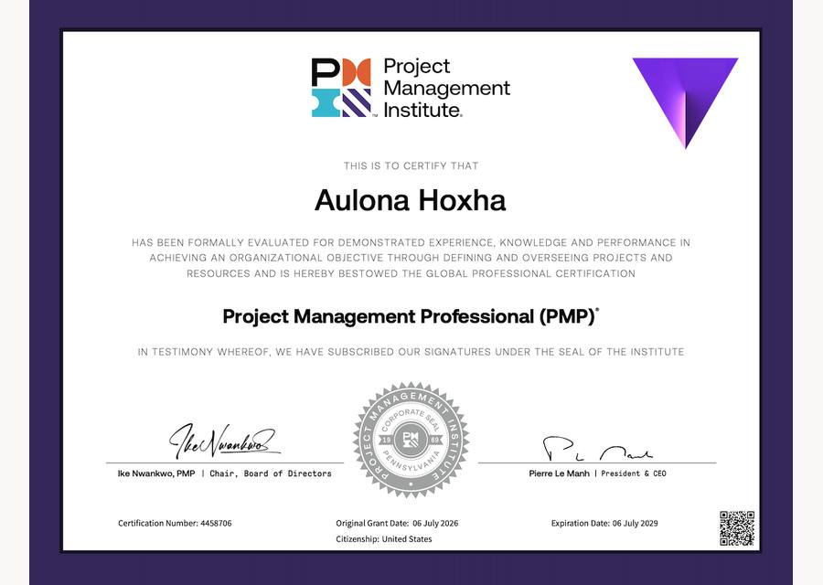
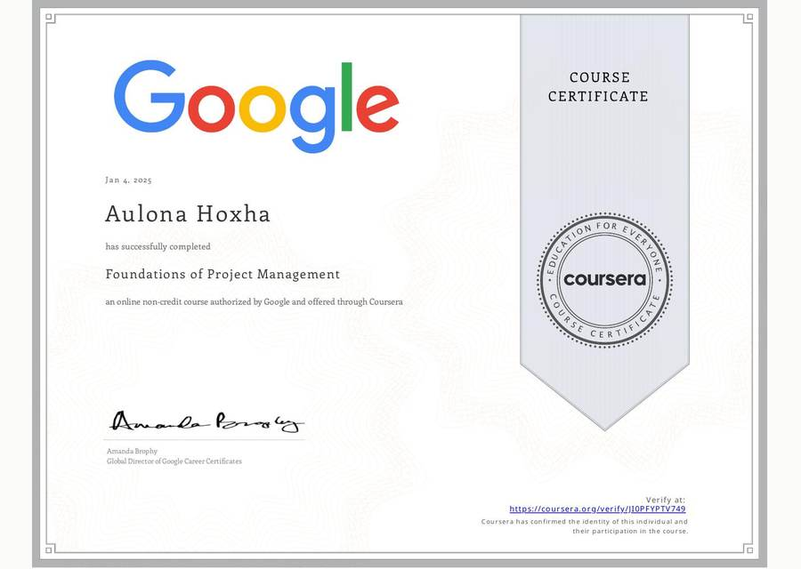
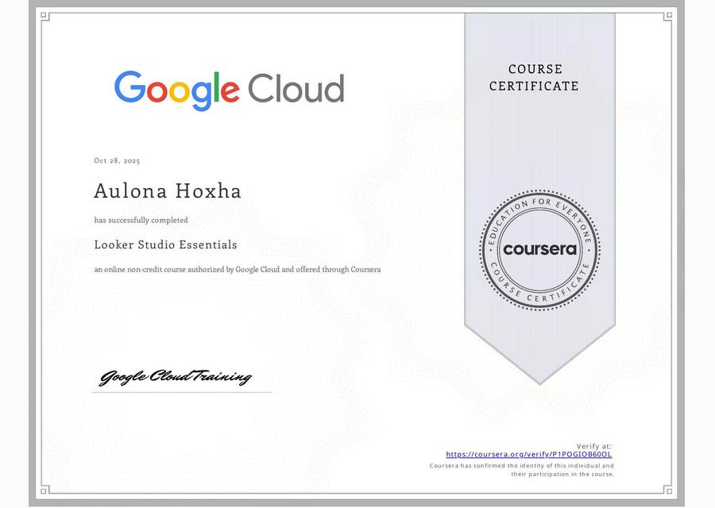

Program Manager | Project Management & Operations
Aulona Hoxha
PMP CertifiedKingdom Branding · BBA, Baruch College · PMI Member
I lead cross-functional programs end to end at Kingdom Branding, from scoping and planning through launch and delivery. With clear governance, response-time standards, and proactive risk management, I bring structure to ambiguous work and keep clients, leadership, and global teams aligned.
Delivering outcomes
people can rely on.
I am a PMP-certified Program Manager with more than five years leading cross-functional programs end to end, from scoping and planning through launch and delivery. At Kingdom Branding, a full-service creative agency, I manage 60+ client accounts and 100+ concurrent initiatives across web development, social media, video production, book publishing, and internal operations, and I built and own the onboarding, client communication, delivery, and asset management processes behind them.
My results come from clear governance and measurable standards: SLA and response-time standards, early risk and blocker management, and dashboards and trackers that keep every program visible. That has meant 90% on-time delivery, 15% less rework, and 90% of incidents resolved within 48 hours.
I align stakeholders and leadership, escalate issues with a clear path to green, and keep a global team, spread across the United States, Brazil, and other regions, working to the same timelines.
That mix is what I bring to any team: program and project management, operations and process design, reporting and data tracking, and onboarding and support for the clients and colleagues I work with. I have worked across project management, finance and operations, customer support, and customer success, which is why I can step into a new team and bring structure quickly.
I hold a Bachelor of Business Administration in Human Resources and Business Administration from Baruch College, City University of New York, and a PMP certification from the Project Management Institute.
Program leadership,
built on operations.
Program Manager
Jan 2024 – Present- Primary point of contact for all incoming projects, setting priorities and aligning leadership, stakeholders, and cross-functional teams on scope, timelines, risks, and next steps.
- Lead end-to-end program delivery across 60+ client accounts and 100+ concurrent initiatives, from onboarding through scope, execution, launch, and final delivery, driving 90% on-time delivery.
- Designed and implemented company-wide operating processes covering client onboarding, client communication, delivery workflows, team management, and asset management, creating consistent governance across all programs.
- Led the internal operations initiative end to end, from project charter, work breakdown structure, and risk register through delivery of a Looker Studio dashboard, standardized SOPs, updated pricing and proposal sheets, and a reusable project template library, with regular CEO reviews against defined acceptance criteria.
- Set up service level agreements for client proposals and a company response-time standard, with every client message acknowledged or cleared within 24 to 48 hours, monitored in HubSpot ticketing.
- Supported the team rollout of Kingdom WP, a client support platform for post-launch website maintenance where clients submit update requests and issues in one place, helping the team adopt it into their workflow.
- Identify risks and blockers early and escalate them with a path-to-green recommendation, resolving 90% of incidents within 48 hours and reducing internal rework by 15%.
- Coordinate a global team across the United States, Brazil, and multiple time zones, and onboard and coach Project Managers on how we lead projects and manage accounts.
- Use Zapier to automate handoffs between tools and reduce manual follow-up.
Project Manager & Finance Manager
Mar 2022 – Dec 2023- Managed project workflows, reporting, and execution across 20+ client accounts while owning invoicing, accounts receivable, and financial coordination.
- Maintained 100% invoice accuracy and reduced delayed payments by 20% through stronger tracking, follow-up, and process discipline.
- Created trackers, templates, and SOPs that improved workflow consistency, payment follow-up, and cross-team visibility.
Customer Support & Executive Assistant
Dec 2021 – Feb 2022- Supported high-volume client communication across 10+ projects, coordinating requests, timelines, and follow-up, and escalating blockers to keep communication timely.
Marketing Project Coordinator
Oct 2021 – Mar 2022- Coordinated podcast production and post-production workflows, including guest outreach, scheduling, and deliverable tracking.
Customer Success Specialist
Oct 2021 – Dec 2021- Processed 15+ daily transactions with strong accuracy and consistency in a high-volume, compliance-focused setting.
Project Manager & Customer Success Manager
Jun 2020 – Oct 2021- Managed client-facing projects and support workflows, improving workflow efficiency by 35% through process changes and stronger coordination.
- Maintained 99.5% fulfillment accuracy, and contributed to 40% audience engagement growth and 30% brand visibility growth.
Customer Service & Administrative Assistant
Feb 2020 – Mar 2020- Supported public-facing administrative and service workflows with a focus on professionalism and follow-through.
Formally trained,
professionally certified.
A foundation in business administration combined with project management certifications from PMI, Google, Microsoft, and Google Cloud.
Project Management Professional (PMP)
The global gold standard in project management, awarded by the Project Management Institute to professionals who demonstrate verified experience, education, and competency in leading projects across predictive, agile, and hybrid methodologies.

Bachelor of Business Administration
Awarded by The Bernard M. Baruch College, The City University of New York. A rigorous business education covering organizational management, operations, strategy, and communication — the foundation for structured, analytical project leadership.
Foundations of Project Management
Completed an online course authorized by Google and offered through Coursera, covering the foundations of project management including project life cycles, methodologies, stakeholder management, and organizational structure.

Project Management Fundamentals
Completed an online course authorized by Microsoft and offered through Coursera, covering core project management principles, planning frameworks, risk identification, and practical tools for managing projects effectively.
Looker Studio Essentials
Completed an online course authorized by Google Cloud and offered through Coursera, covering data visualization, dashboard creation, and reporting in Looker Studio — applied directly to building operational dashboards for Kingdom Branding.

Core capabilities
Leading programs from scoping and planning through launch and final delivery across web, social, video, publishing, and operations work, with PMP training in Agile and Waterfall methods.
Company-wide onboarding, delivery, team management, and asset management processes, backed by charters, work breakdown structures, risk registers, SOPs, and a reusable project template library.
Dashboards and trackers that keep programs and operations visible, including a Looker Studio domain tracking dashboard and tracking for invoices and payments, website traffic, and hosting due dates.
Aligning leadership, clients, and cross-functional teams on scope, timelines, risks, and next steps.
Early risk identification and escalation with a clear path to green, resolving 90% of incidents within 48 hours.
Coaching Project Managers and keeping a global team across the United States, Brazil, and multiple time zones aligned on timelines and responsibilities.
Proposal SLAs and a 24 to 48 hour response standard, monitored through HubSpot ticketing and supported by the Kingdom WP client support platform.
Onboarding, client communication, and ticketing built and owned at Kingdom Branding, with hands-on experience in customer support, customer success, and issue resolution.
Scope, timeline, and budget management, plus invoicing and accounts receivable ownership with 100% invoice accuracy.
Project stories
Internal / Process Creation and Optimization
Kingdom Branding Operations
Kingdom Branding
Kingdom Branding InternalLed a two-month internal initiative that standardized how Kingdom Branding delivers work: a project charter, risk register, Looker Studio dashboard, SOP templates, updated pricing sheets, and a reusable project template library.
WordPress / Website Redesign and Development
Children's Research Triangle
childrensresearchtriangle.org
Kingdom BrandingLed an eight-month, five-phase WordPress redesign from contract to on-schedule go-live with a four-person cross-functional team, backed by a milestone register and a staging environment for quality control.
Video Production / Marketing Asset Delivery
CRT Gala Campaign
Children's Research Triangle
Kingdom BrandingDeveloped and presented the proposal, then coordinated in-person video sessions, post-production, and campaign assets for a fundraising gala video, delivered on schedule.
Website Development / Ongoing Maintenance
Tinley Park
Website build and monthly maintenance
Kingdom BrandingTracked a large website build from start to finish, managing timelines, client approvals, and team coordination through a full content migration. Delivered on time, and the client remains on a monthly maintenance retainer.
Website Development / Design Support
CASA of Cook County
Nonprofit client
Kingdom BrandingSupported the creative director on a long-running website engagement, alongside event design support, handling billing and supporting client communication and meetings.
Social Media Marketing / Design Support
JJ’s Bakery
Monthly retainer + on-demand design
Kingdom BrandingProgram manager for a monthly social media retainer with on-demand design support, covering onboarding, monthly client meetings, data tracking, and a change control process that priced every out-of-scope request.
Shopify / Website Redesign and Development
Optimal Laboratories
optimallaboratories.com
Kingdom BrandingOwned a Shopify catalog expansion end to end with a six-person team, from discovery through go-live verification, leaving documented workflows for future catalog updates.
Book Publishing / End-to-End Production
The Future of My Past
Beyond an Autobiography · Amazon, 2023
Kingdom BrandingOwned the full publishing lifecycle for a first-time author’s autobiography, using a sign-off-gated workflow from cover design through ISBN generation to Amazon distribution.
My sincere thanks to the Publishers, Kingdom Branding, and staff who worked diligently to enhance this publication with their creativity and ingenuity.
Udoh Elijah Udom · Author, The Future of My Past
Results at Kingdom Branding
Let's work together
For program and project management, operations, and delivery engagements, partnerships, and collaborations.